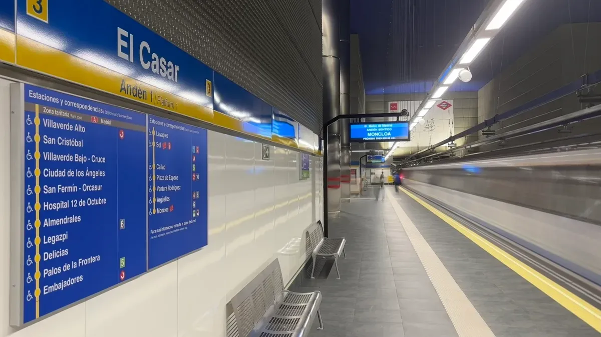
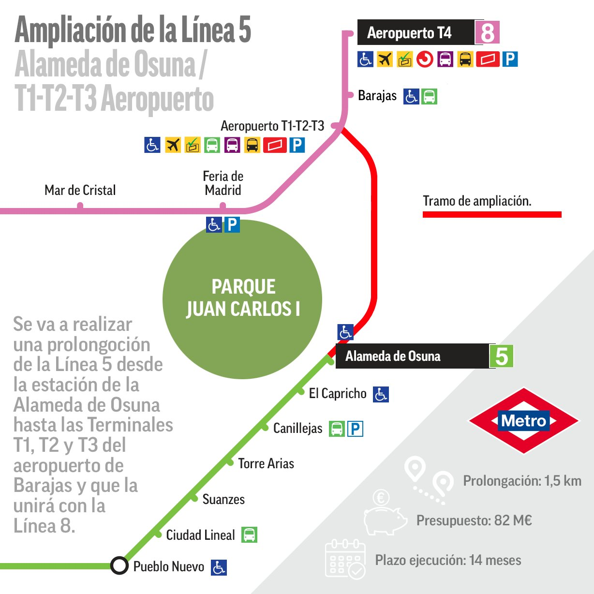
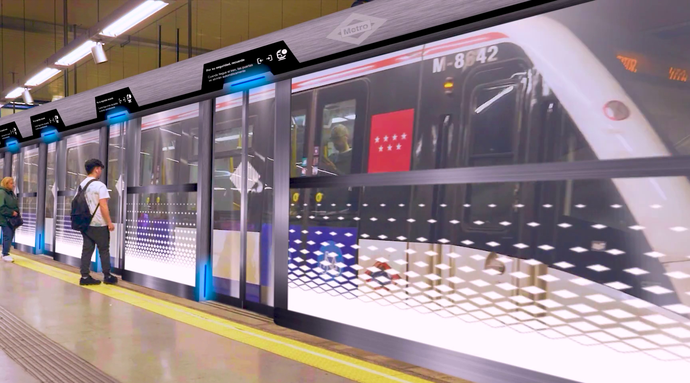
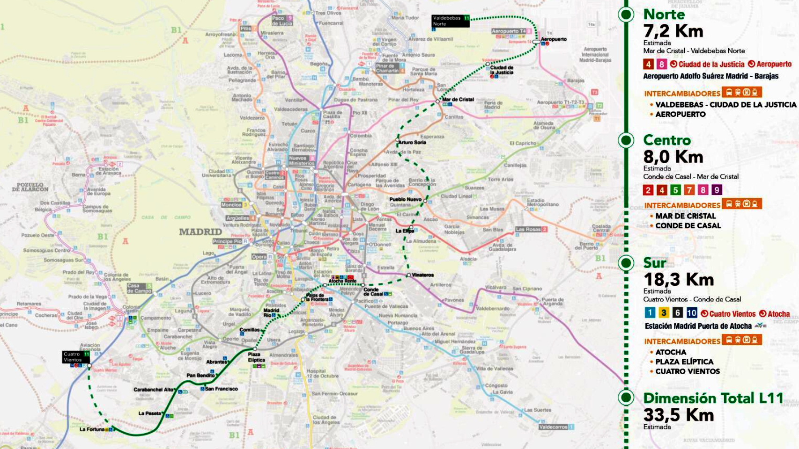

Noticias
Nueva estación: El Casar (ampliación de la línea 3)

La nueva estación de Metro de Madrid en El Casar, situada en Getafe, ya está en funcionamiento como parte de la ampliación de la línea 3 desde Villaverde Alto. Esta obra supone la primera gran extensión de la red en la última década y mejora notablemente la conexión entre la capital y el sur metropolitano. La estación cuenta con un diseño moderno, completamente accesible, con ascensores y escaleras mecánicas. Gracias a esta ampliación, más de un millón de vecinos de la zona sur se benefician de un transporte más rápido y directo hacia el centro de Madrid.
Proyecto de estación en Alameda de Osuna (línea 8 y conexión con el aeropuerto)

El proyecto de ampliación de la línea 5 del Metro hasta el aeropuerto contempla la construcción de una nueva estación en el entorno de Alameda de Osuna, que actuará como punto de conexión con la línea 8. La obra prevé un recorrido subterráneo de unos 1,7 kilómetros y una inversión de unos 180 millones de euros. El objetivo es mejorar la movilidad de los barrios del noreste de Madrid y facilitar el acceso al Aeropuerto Adolfo Suárez Madrid-Barajas. Esta nueva parada también dará servicio a miles de trabajadores del entorno aeroportuario y reducirá la saturación de las líneas actuales.
Cortes y obras en la línea 6: automatización y mejoras

La línea 6 del Metro de Madrid, una de las más utilizadas y la única circular, está sufriendo cortes parciales debido a las obras de modernización y automatización del servicio. Desde septiembre hasta finales de 2025, varios tramos permanecerán cerrados mientras se adaptan túneles y sistemas para introducir trenes automáticos en 2027. Durante este periodo, se han habilitado autobuses gratuitos para cubrir las zonas afectadas. Aunque los cortes han causado molestias a los usuarios, estas obras permitirán mejorar la frecuencia, reducir incidencias y aumentar la eficiencia energética del sistema en el futuro.
Ampliación de la Línea 11: una “diagonal” que transformará Madrid

La Línea 11 del Metro de Madrid se encuentra en plena expansión con un ambicioso proyecto que convertirá esta línea en una gran “diagonal” que cruzará la ciudad de suroeste a noreste. Las obras incluyen más de 30 kilómetros nuevos de túneles y 20 estaciones adicionales, entre ellas Comillas y Madrid Río, además de un gran intercambiador en Conde de Casal. Esta ampliación mejorará la conexión entre barrios periféricos y zonas centrales, reduciendo el tiempo de viaje y descongestionando líneas como la 6 y la 1. Las tuneladoras ya están en marcha y se espera que los primeros tramos entren en funcionamiento entre 2026 y 2027.